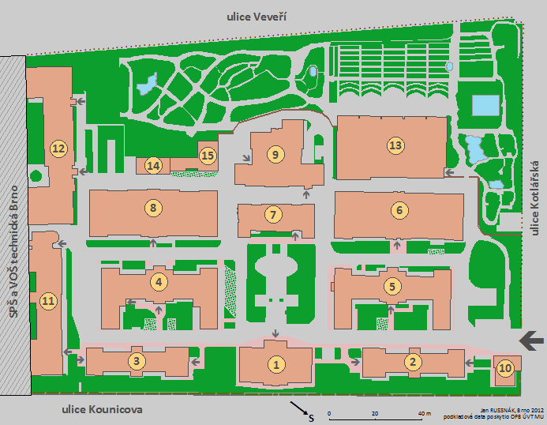
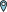

Dobývání krtka!
Milé krtče, fakulta je ještě pořá


Automat na pamlsky
Vrátnice
Knihovna
Jezírko
Skleník
Terasa
Socha
Odpadkové koše
Stojan na kola
Záhon
Cedule
Fontána
Strom v zahradě
Květiny
Lavička
Zadní vchod
Bylinkový záhon
Magnólie
Kyvadlo
Menza
Rozvodní skříň
Zvonky na budově fyziky
Chodba
Dveře 1
Dveře 2
Dveře 3
Záchod
Učebna 1
Učebna 2
Učebna 3
KrTeK